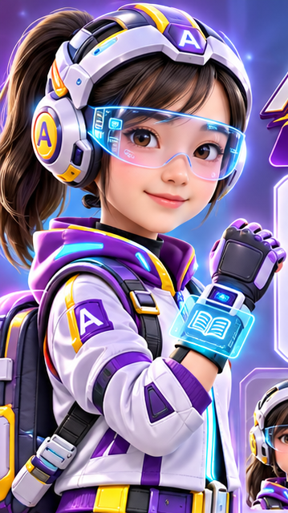
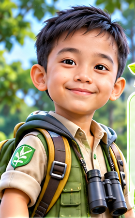

Pilih satu anggota tim untuk menemanimu menjelajahi 10 pos dan menghadapi 81 titik tantangan.

Cerdas, teliti, dan penuh rasa ingin tahu. Siap membaca petunjuk misterius dari galaksi jauh.

Berani, ramah, dan gemar meneliti. Ahli menemukan kehidupan serta rahasia alam semesta.
Kreatif, tangguh, dan cepat berpikir. Siap memecahkan kode serta mengendalikan teknologi canggih.